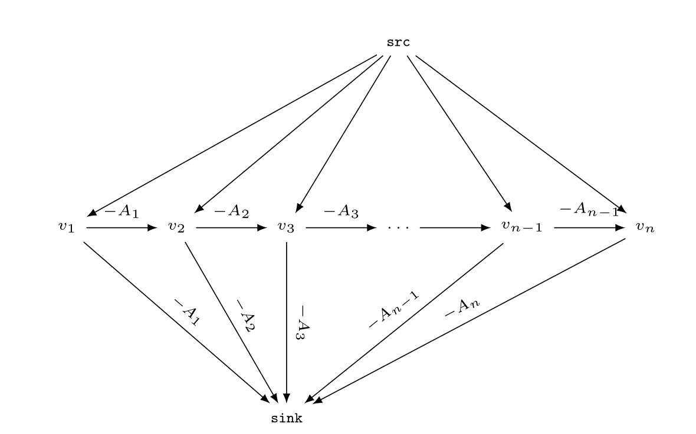

Maximum Sum Subarray in O(n) without Kadane's Algorithm
Maximum Subarray Sum
Reduction to Shortest Paths #
Given an array \(A\) of length \(n\), construct a directed graph as follows.

Add vertices #
- Add special vertices
src,sink. - Add one vertex \(v_i\) for each \(A_i\).
Add edges #
- Add edge of weight 0 from
srcto each \(v_i\). - Add edge of weight \(-A[i]\) from \(v_i\) to
sink. - Add edge of weight \(-A[i]\) from \(v_i\) to \(v_{i+1}\).
We find shortest path from src to
sink. \(-1\) times cost of that path is our
answer.
Derivation #
Now, you might be thinking Kadane's algorithm is just a few lines and this one will need a lot of code. Let me show you how little code is needed.
This is a DAG so we can find the shortest path by relaxing edges
going out of vertices in topological order. We don't need to
implement topological sort because we already know the order i.e.
sink, \(v_n\), \(v_{n-1}\), …, \(v_0\),
src.
Max-Subarray-Sum(A)
1 d[v] = 0 for v ∈ V
2 d[vₙ] = -A[n]
3 for vᵢ = vₙ₋₁, ..., v₁, src
4 for v ∈ Adj[vᵢ]
5 RELAX(vᵢ, v, weight(vᵢ, v))
6 return -min{d[v] for v ∈ V}We know there are only two outgoing edges from the vertices being relaxed. We replace RELAX by its implementation for each of those edges to get the code below.
Substitute adjacent vertices #
Max-Subarray-Sum(A)
1 d[v] = 0 for v ∈ V
2 d[vₙ] = -A[n]
3 for vᵢ = vₙ₋₁, ..., v₁, src
4 RELAX(vᵢ, vᵢ₊₁, weight(vᵢ, vᵢ₊₁))
5 RELAX(vᵢ, sink, weight(vᵢ, sink))
6 return -min{d[v] for v ∈ V}Substitute weights #
Max-Subarray-Sum(A)
1 d[v] = 0 for v ∈ V
2 d[vₙ] = -A[n]
3 for vᵢ = vₙ₋₁, ..., v₁, src
4 RELAX(vᵢ, vᵢ₊₁, -A[i])
5 RELAX(vᵢ, sink, -A[i])
6 return -min{d[v] for v ∈ V}Substitute implementation of RELAX #
Max-Subarray-Sum(A)
1 d[v] = 0 for v ∈ V
2 d[vₙ] = -A[n]
3 for vᵢ = vₙ₋₁, ..., v₁, src
4 d[vᵢ] = min(d[vᵢ], d[vᵢ₊₁] - A[i])
5 d[vᵢ] = min(d[vᵢ], d[sink] - A[i])
6 return -min{d[v] for v ∈ V}This in turn is equivalent to the following final code since \(d[\text{sink}] = 0\).
Max-Subarray-Sum(A)
1 d[v] = 0 for v ∈ V
2 d[vₙ] = -A[n]
3 for vᵢ = vₙ₋₁, ..., v₁, src
4 d[vᵢ] = min(-A[i], d[vᵢ₊₁] - A[i])
5 return -min{d[v] for v ∈ V}Go Implementation #
func maxSubarraySum(A []int) int {
n := len(A)
d := make([]int, n)
d[n-1] = -A[n-1]
for i := n-2; i >= 0; i-- {
d[i] = min(-A[i], -A[i] + d[i+1])
}
return -slices.Min(d)
}We could maintain the global min while looping instead of
computing it at the end using slices.Min.
func maxSubarraySum(A []int) int {
n := len(A)
d := make([]int, n)
d[n-1] = -A[n-1]
minn := d[n-1]
for i := n-2; i >= 0; i-- {
d[i] = min(-A[i], -A[i] + d[i+1])
minn = min(minn, d[i])
}
return -minn
}Looks exactly like Kadane's algorithm, doesn't it?